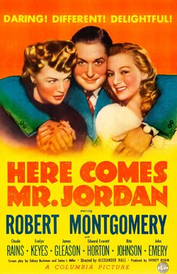

Here Comes Mr. Jordan

Starring: Robert Montgomery, Evelyn Keyes, Claude Rains
Director: Alexander Hall
Writer: Sidney Buchman, Seton I. Miller
Producer: Everett Riskin
Here Comes Mr. Jordan is a 1941 American fantasy romantic comedy film directed by Alexander Hall, in which a boxer, mistakenly taken to Heaven before his time, is given a second chance back on Earth. It stars Robert Montgomery, Claude Rains, Evelyn Keyes, James Gleason, Edward Everett Horton, Rita Johnson, and John Emery.
Trivia
- Won the Academy Award for Best Story.
- Won the Academy Award for Best Writing, Adapted Screenplay.
- Selected for the National Board of Review: Top Ten Films.
- Also nominated for: Academy Award for Best Supporting Actor; Academy Award for Best Actor; Academy Award for Best Director; Academy Award for Best Cinematography, Black-and-White; and 1 more.
- Columbia Pictures president Harry Cohn was persuaded to try a somewhat "risky" project in Here Comes Mr. Jordan, despite his well-founded policy of building on past successful ventures, rather than financing more adventurous films.
- An original 1938 stage play, Heaven Can Wait by Harry Segall, was adapted to form the basis of the film.
- Broadway producer Jed Harris had planned to produce the play on the New York stage, until Columbia purchased the rights as a vehicle for Cary Grant.
Filming Locations
- Principal photography began on April 21, 1941, and ran until June 5 of that year.
- Location shooting took place at Providencia Ranch, California, and on Universal City sound stages.
Previous Showings
4 Runs • 1 Festival
Original Billings: 1 run (October 1, 1941)
Original Run: October 1, 1941 (Wednesday - Saturday)
All runs on record (4):
- October 1, 1941 (Wednesday - Saturday)Robert Montgomery
- November 1 - 2, 1990w/ Moonrise
- November 21 - 22, 1991w/ The Devil and Daniel Webster
- July 16 - 17, 1998Dear Old Hollywoodw/ Sitting Pretty